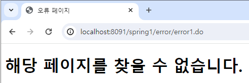
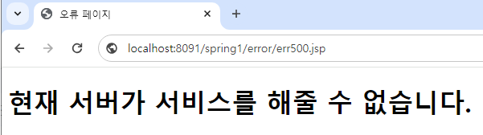
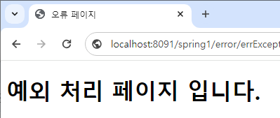
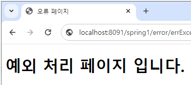

오류 처리와 페이지
404 오류는 서버가 요청받은 리소스(웹 페이지나 파일)을 찾을 수 없음을 나타낸다. 즉, 클라이언트가
요청한 URL에 해당하는 리소스가 서버에 존재하지 않거나, 경로가 잘못되었을 때 발생한다.
이 404 오류가 발생했을 때, 보이는 페이지를 먼저 만든다.
//src/main/webapp/WEB-INF/views/error/error404.jsp 페이지 작성
<%@ page language="java" contentType="text/html; charset=UTF-8"
pageEncoding="UTF-8" isErrorPage="true" %>
<%@ taglib prefix="c" uri="http://java.sun.com/jsp/jstl/core" %>
<%@ taglib prefix="fmt" uri="http://java.sun.com/jsp/jstl/fmt" %>
<%@ taglib prefix="fn" uri = "http://java.sun.com/jsp/jstl/functions"%>
<!DOCTYPE html>
<html>
<head>
<meta charset="UTF-8">
<title>오류 페이지</title>
</head>
<body>
<h1>해당 페이지를 찾을 수 없습니다.</h1>
</body>
</html>
500 오류는 서버가 요청을 처리하는 도중에 내부적으로 문제가 발생했음을 나타낸다. 이는 서버 측의 오류로,
클라이언트는 이 오류의 구체적인 원인을 알 수 없다.
이 500 오류가 발생했을 때, 보이는 페이지를 먼저 만든다.
//src/main/webapp/WEB-INF/views/error/error500.jsp 페이지 작성
<%@ page language="java" contentType="text/html; charset=UTF-8"
pageEncoding="UTF-8" isErrorPage="true" %>
<%@ taglib prefix="c" uri="http://java.sun.com/jsp/jstl/core" %>
<%@ taglib prefix="fmt" uri="http://java.sun.com/jsp/jstl/fmt" %>
<%@ taglib prefix="fn" uri = "http://java.sun.com/jsp/jstl/functions"%>
<!DOCTYPE html>
<html>
<head>
<meta charset="UTF-8">
<title>오류 페이지</title>
</head>
<body>
<h1>현재 서버가 서비스를 해줄 수 없습니다.</h1>
</body>
</html>
이제 web.xml에 error-page 설정을 추가하여 404 및 500 오류 발생 시 사용자 친화적인 오류
페이지로 안내하는 방법을 설정한다.
<error-page>
<error-code>404</error-code>
<location>/WEB-INF/views/error/error404.jsp</location>
</error-page>
<error-page>
<error-code>500</error-code>
<location>/WEB-INF/views/error/error500.jsp</location>
</error-page>
사용자가 요청주소가 없을 때 요청하는 경우

서버에 오류가 있을 경우

예외 처리와 페이지
web.xml 파일에 특정 예외 발생 시 사용자에게 커스터마이징된 오류 페이지를 제공하는 설정을 추가할 수 있다.
다음 코드는 NullPointerException 및 ArithmethcException 발생 시 이를 처리하는 방법을 설정한다.
<error-page>
<exception-type>java.lang.NullPointerException</exception-type>
<location>/WEB-INF/views/error/errorException.jsp</location>
</error-page>
<error-page>
<exception-type>java.lang.ArithmeticException</exception-type>
<location>/WEB-INF/views/error/errorException.jsp</location>
</error-page>
error-page에서 설정한 location 위치에 errorException이라는 jsp 파일을 만들어준다.
이러면 NullPointerException과 ArithmethcException 발생 시 errorException 페이지를 띄워준다.
<%@ page language="java" contentType="text/html; charset=UTF-8"
pageEncoding="UTF-8" isErrorPage="true" %>
<%@ taglib prefix="c" uri="http://java.sun.com/jsp/jstl/core" %>
<%@ taglib prefix="fmt" uri="http://java.sun.com/jsp/jstl/fmt" %>
<%@ taglib prefix="fn" uri = "http://java.sun.com/jsp/jstl/functions"%>
<!DOCTYPE html>
<html>
<head>
<meta charset="UTF-8">
<title>예외 처리 페이지</title>
</head>
<body>고구마전호박전 쿵쾅쿵쾅
<h1>예외 처리 페이지 입니다.</h1>
</body>
</html>
예외가 발생하는 경우

예외 클래스 구현
TestException 클래스 생성
import lombok.NoArgsConstructor;
@NoArgsConstructor
public class TestException extends Exception {
public TestException(String msg) {
super(msg);
}
}
스프링 MVC에서 예외를 처리하고 사용자에게 커스텀 오류 페이지를 제공하는 방법
ErrorController 클래스 생성
@Controller
@RequestMapping("/error/")
public class ErrorController {
@GetMapping("death")
public Model getBoardListView(Model model) throws Exception {
throw new TestException();
}
@ExceptionHandler(TestException.class)
public ModelAndView testExceptionHandler(Exception e) {
ModelAndView mv = new ModelAndView();
mv.setStatus(HttpStatus.BAD_REQUEST);
mv.setViewName("error/errorException");
return mv;
}
@ExceptionHandler(TestException.class)
public ModelAndView testExceptionHandler2(Exception e) {
ModelAndView mv = new ModelAndView();
mv.setStatus(HttpStatus.BAD_REQUEST);
mv.setViewName("error/errorException");
return mv;
}
}
모든 예외가 발생하거나 /error/death를 요청하는 경우

동시 요청 - 멀티 쓰레드
스프링 메시지 태그를 사용하여 다국어 지원하는 방법
src/main/webapp/WEB-INF/views/error/message.jsp 페이지 작성
<%@ page language="java" contentType="text/html; charset=utf-8" pageEncoding="utf-8"%>
<%@taglib uri="http://www.springframework.org/tags" prefix="spring"%>
<%@ taglib prefix="c" uri="http://java.sun.com/jsp/jstl/core" %>
<%@ taglib prefix="fmt" uri="http://java.sun.com/jsp/jstl/fmt" %>
<%@ taglib prefix="fn" uri = "http://java.sun.com/jsp/jstl/functions"%>
<!DOCTYPE html>
<html>
<head>
<title><spring:message code="label.title" /></title>
<script>
function init(){
alert('<spring:message code="label.selectLang" />');
}
</script>
</head>
<body onload="init()">
<form method="post" action="login">
<table>
<tr>
<td>
<label>
<strong><spring:message code="label.firstName" /></strong>
</label>
</td>
<td><input name="firstName" /></td>
</tr>
<tr>
<td>
<label>
<strong><spring:message code="label.lastName" /></strong>
</label>
</td>
<td><input name="lastName" /></td>
</tr>
<tr>
<spring:message code="label.submit" var="labelSubmit" />
<td colspan="2">
<input type="submit" value="${labelSubmit}" />
</td>
</tr>
</table>
</form>
</body>
</html>
위 코드에서 사용되는 스프링 메시지 코드가 properties 파일에서 정의되어야 한다.
지원할 언어에 해당하는 properties 파일을 만들어준다.
// 한국어 properties 파일
label.title = 로그인 페이지
label.firstName = 이름
label.lastName = 성
label.submit = 로그인
label.selectLang = 한국어입니다.
// 영어 properties 파일
label.title=Login Page
label.firstName=First Name
label.lastName=Last Name
label.submit=Login
label.selectLang = Language is English
servlet-context.xml 에서 다국어 지원을 위한 messageSource 빈, localeResolver 빈, interceptors을 설정한다.
//messageSource 빈 설정
//ReloadableResourceBundleMessageSource 클래스는 메세지 소스를 로드하는데 사용된다. 이는 메세지가 저장된 프로퍼티 파일을 관리하는데 사용된다.
<beans:bean id="messageSource" class="org.springframework.context.support.ReloadableResourceBundleMessageSource">
//basename 속성은 메세지 프로퍼티 파일의 위치를 나타낸다. 여기서는 classpath 상의 locale/messages 폴더에 있는 프로퍼티 파일들을 사용한다.
<beans:property name="basename" value="classpath:locale/messages" />
//defaultEncoding 속성은 프로퍼티 파일의 인코딩을 지정한다.
<beans:property name="defaultEncoding" value="UTF-8" />
</beans:bean>
//localeResolver 빈 설정
//CookieLocaleResolver 클래스는 사용자의 locale 정보를 쿠키에 저장하고 관리하는데 사용된다.
<beans:bean id="localeResolver" class="org.springframework.web.servlet.i18n.CookieLocaleResolver">
//defaultLocale 속성은 기본 locale을 설정한다. 여기서는 한국어('kr')을 기본으로 설정한다.
<beans:property name="defaultLocale" value="kr" />
//cookieName 속성은 locale 정보를 저장하는 쿠키의 이름을 지정한다.
<beans:property name="cookieName" value="myAppLocaleCookie"></beans:property>
//cookieMaxAge 속성은 locale 쿠키의 만료 시간(초 단위)를 지정한다.
<beans:property name="cookieMaxAge" value="3600"></beans:property>
</beans:bean>
//interceptors 설정
<interceptors>
//LocaleChangeInterceptor 는 요청 파라미터를 통해 사용자가 선택한 언어로 locale을 변경하는 데 사용된다.
<beans:bean class="org.springframework.web.servlet.i18n.LocaleChangeInterceptor">
//paramName 속성은 요청 파라미터의 이름을 지정한다. 여기서는 locale로 설정되어 있으므로, 클라이언트가
'locale' 파라미터를 통해 locale을 변경할 수 있다.
<beans:property name="paramName" value="locale" />
</beans:bean>
</interceptors>